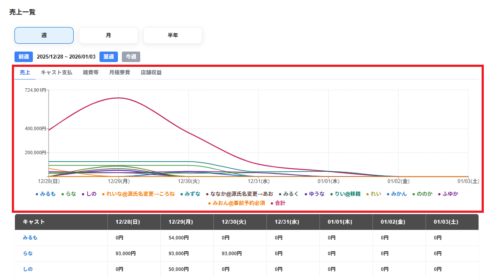

売上一覧の画面には以下の選択のタブが表示されます。
・売上
表示期間の請求金額の合計の金額が表示されます。
・キャスト支払
表示期間のキャスト支払の合計の金額が表示されます。
・雑費等
表示期間の待機料・寮費・雑費とホテル支払の合計の金額が表示されます。
・月極寮費
表示期間の月極寮費の金額の合計が表示されます。
※店舗情報で月極寮費を未使用にしている場合表示されません。
・店舗収益
表示期間の店舗収益の金額が表示されます。
※売上合計からキャスト支払いと雑費等を引いて、月極寮費を足したものが店舗収益になります。
選択のタブで選択した項目に合わせてグラフが表示されます。
グラフの縦軸には金額、横軸には期間が表示されます。
グラフの下部には、色付きの点とキャスト名が表示され、グラフがどのキャストのものかを示します
。※合計は、全キャストの合計のグラフが表示されます。
キャスト名・合計をクリックすると表示が薄くなり、クリックした項目のグラフのみ表示をしないようにできます。
もう一度キャスト名・合計をクリックし、表示が濃く(初期値)になるともう一度クリックした項目のグラフを表示できます。
※グラフに表示しないようにしたキャストの項目は、売上一覧の画面下部に一覧の項目にも表示されなくなります。
グラフ上にマウスを合わせると、該当時刻帯の以下の項目が表示されます。
・対象の期間
・合計金額
・キャスト別の金額
